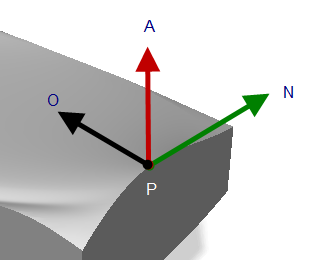
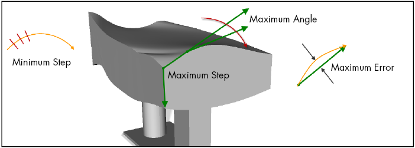
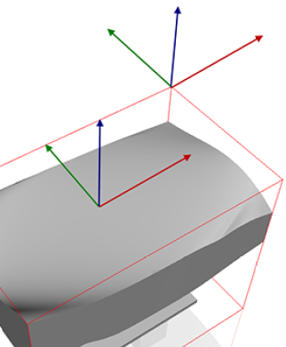
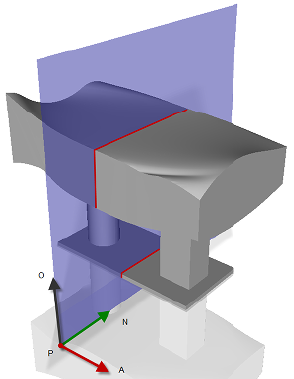

vcTopology represents the topology data of tessellated geometry and can be used to generate simple and complex geometry, for example NURBS, meshes and splines.
Contents Hide
When a CAD file is loaded in 3D world, any topology data for tessellated geometry grouped in a vcTriangleSet object can be accessed from the object's Topology property. This differs from curve data, which is stored in a CurveData property of a vcCompactLineSet object.
Generally, topology data stored in a Geometry feature never duplicated unless contained triangle sets are updated using scripts. Any edits or modifying operations performed on tessellated geometry will automatically update topology data as needed.
| Name | Type | Access | Description |
| CurveCount | Integer | R | Gets the total number of curves in set. |
| CurveLoopCount | Integer | R | Gets the total number of curve loops in set. |
| FaceCount | Integer | R | Gets the total number of faces in set. |
| PointCount | Integer | R | Gets the total number of points considered boundary-corners
in mesh, for example curve ends. If set is not a mesh, gives zero.
Note: To get the total number of points in set, use PointCount in vcTriangleSet. |
| Name | Return Type | Parameters | Description |
| brepAvailable | Boolean | None | Returns True if set contains boundary representation; otherwise returns False. |
| createCurveLoop | Integer | Integer face | Adds a new curve loop to a face at a given index in set, and then returns the index of new curve loop in set. |
| createNurbsFace | Integer | Integer udegree, Integer vdegree, List of vcVector ctrl_pts, List of Integer umultiply, List of Integer vmultiply, List of Real uknots, List of Real vknots, List of Real uknots, List of Real ctrl_weights | Adds a new non-uniform b-spline surface (NURBS) to set, and then returns the index of new surface in set. |
| createPlanarFace | Integer | vcVector pos, vcVector normal | Adds a new planar (unlimited) face using given position and surface normal vectors, and then returns the index of new face in set. |
| createOffsetSurface | Integer | Integer face, Real offset, vcTriangleSet target | Creates a copy of face at a given index in set, and then returns
the index of new face in a given geometry set.
New face is offset from original face. If offset argument is positive value, new face is offset in surface normal direction; otherwise offset is the opposite direction of surface normal. |
| createTrimPolyLine | Integer | Integer loop | Creates a new polyline using a curve loop at a given index
in set, which can then be used for trimming and extending operations,
and polyline is surface domain (XY coordinates only).
The returned value is the index of trim polyline in set. |
| createTrimSpline | Integer | Integer loop, Integer degree, List of vcVector ctrl_pts, List of Integer knotmultiply, List of real knots, List of Real weights | Create a new spline in set used for trimming and extending operations, and spline is surface domain (XY coordinates only). |
| deleteNurbFace | None | Integer face | Deletes a NURBS face at a given index in set.
If NURBS surface contains more than one face, geometry is tessellated after deletion. |
| getCurveCurveLoop | Integer | Integer curveindex | Returns the index of curve loop that a curve belongs to in set. |
| getCurveFace | Integer | Integer curveindex | Returns the index of face that a curve belongs to in set. |
| getCurveIntersections | List of 4-tuple (vcVector pos, real curve_dist, Real face_u, Real face_v) | Integer face, vcCompactLineSet curveset, Integer curve | Returns a list of curve intersection points based on given arguments. |
| getCurveLength | Real | Integer curve_index | Returns the length of a curve at a given index in set. That is, the total distance along the curve. |
| getCurveLoopCurve | Integer | Integer curveloopindex, Integer relcurveindex | Returns the absolute index of an inner curve loop relative to its curve loop in set. |
| getCurveLoopCurveCount | Integer | Integer curveloopindex | Returns the total number of inner curve loops for a curve loop of face in set. |
| getCurveNeighbor | Integer | Integer curve_index | Returns the index of a curve neighboring another curve in set. |
| getCurvePointCount | Integer | Integer curveindex | Returns the total number of points for a curve at a given index in set. |
| getCurvePointIndex | Integer | Integer curveindex, Integer relpointindex | Returns the absolute index of point relative to its curve in set. |
| getCurvePosition | vcMatrix | Integer curve_index, Real position | Returns the position matrix of a point on a curve at a given
distance along curve.
Details about the position matrix: Position vector Normal vector Orientation vector Approach vector See table footnotes for more information. |
| getCurvePositions | List of vcMatrix | Integer curve_index, [Real minstep], [Real maxstep], [Real maxerror], [Real maxangle] | Returns a list of position matrices for points along a curve
using different criteria.
The minstep and maxstep arguments define the step values along distance of curve for generating new points. The maxerror argument defines a maximum distance error along length of curve for generating a new point. The maxangle argument defines a angle tolerance along curve for generating new points. See table footnotes for more information. |
| getCurveType | Enumeration | Integer curve | Returns a trim curve's type, which is either a polyline or
spline.
See Topology Constants for more information. |
| getFaceBound | 2-tuple (vcMatrix bbox_center, vcVector bbox_diagonal) | Integer face_index | Returns bound box data for a face as an ordered pair (position
matrix of bound box center, vector of bound box half-diagonal).
See table footnotes for more information. |
| getFaceCurveLoop | Integer | Integer faceindex, Integer relcurveloopindex | Returns the absolute index of a curve loop relative to its face in set. |
| getFaceCurveLoopCount | Integer | Integer faceindex | Returns the total number of curve loops in a face. |
| getFaceMinPointDistance | 3-tuple (vcVector uv, vcVector pos, Real distance) | Integer face, vcVector point | Returns UV coordinates, position vector and distance of a given point to a face. |
| getFaceNormal | vcVector | Integer face, vcVector uv | Returns surface normal of a face at parametric UV coordinates. |
| getFacePlaneIntersections | List of (List of vcMatrix) | Integer face_index, vcMatrix plane, Real minstep, Real maxstep, Real maxerror, Real maxangle | Returns a list containing lists of position matrices for points
where a defined plane intersects a face.
Each time a plane goes through hole in face a new list is added, thereby allowing you to infer hole points on face-plane intersection. Details about the position matrix: Position vector Normal vector Orientation vector Approach vector See table footnotes for more information. |
| getFacePoint | vcVector | Integer face, vcVector uv | Returns the position vector of a point on a face at given UV coordinates. |
| getFacePointAndDerivate | 3-tuple (vcVector pos, vcVector udir, vcVector vdir) | Integer face, vcVector uv | Returns the position vector and UV direction first derivates of a face at given UV coordinates. |
| getFaceStartTriangle | Integer | Integer face_index | Returns the absolute index of first triangle of a face in set. |
| getFaceTriangleCount | Integer | Integer face_index | Returns the total number of triangles of a face. |
| getFaceType | Enumeration | Integer face | Returns the type of a face, which is either a tessellated,
planar or NURBS.
See Topology Constants for more information. |
| getNurbsFaceControlPoints | List of vcVector | Integer face | Returns a list of control points for a NURBS face. |
| getNurbsFaceControlWeights | List of Real | Integer face | Returns a list of control weights for a NURBS face. |
| getNurbsFaceDegree | 2-tuple (Integer udegree, Integer vdegree) | Integer face | Returns UV degree values for a NURBS face. |
| getNurbsFaceUKnots | 2-tuple (List of Real uknots, List of Integer umultiply) | Integer face | Returns U direction knot weight values and knot multiplicities. |
| getNurbsFaceVKnots | 2-tuple (List of Real vknots, List of Integer vmultiply) | Integer face | Returns V direction knot weight values and knot multiplicities. |
| getPlanarFacePositionAndNormal | 2-tuple (vcVector position, vcVector normal), vcVector | Integer face | Returns a planar face position and normal vectors. |
| getPolyLineCurvePoints | List of vcVector | Integer curve | Returns a list of position vectors for all points in a polyline. |
| getPoint | vcVector | Integer pointindex | Returns the position vector of a curve end (corner point) at a given index relative to either its curve or face. |
| getSplineCurveDegree | Integer | Integer curve | Returns the degree of a spline. |
| getSplineCurveControlPoints | List of vcVector | Integer curve | Returns a list of control points for a face trimming spline. |
| getSplineCurveControlWeights | List of Real | Integer curve | Returns a list of control weight values for a face trimming spline. |
| getSplineCurveKnots | 2-tuple (List of Real knots, List of Integer multiplicities) | Integer curve | Returns a list of knot weights and multiplicities for a face trimming spline as an ordered pair. |
| getSurfaceIntersections | 2-tuple (Integer curve_count, Integer curves_start) | Integer face, vcTriangleSet other_set, Integer other_face, Real approxtol, Real angletol, vcCompactLineSet target | Returns the amount of intersecting curves between two faces in the same vcGeometryContainer object. |
| isCurveCircular | Boolean | Integer curve_index | Returns True if a curve at a given index in set is circular where start and end points are same; otherwise returns False. |
| isFaceLinear | 2-tuple (Boolean udir, Boolean vdir) | Integer face | Returns True if a face at a given index in set is linear in parametric UV directions; otherwise returns False. |
| projectCurve | 2-tuple (Integer curve_count, Integer curves_start) | Integer face, vcCompactLineSet curve, Real approxtol, Real maxdist, Real deviation, vcCompactLineSet targetlineset | Projects a given curve along the shape of a given face based on direction vector of curve. |
| trimFace | Integer | Integer face | Trims a face at a given index in set using trimming polylines
and/or splines.
Returns 1/True if trimming is successful; otherwise returns 0/False. |
Notes:



